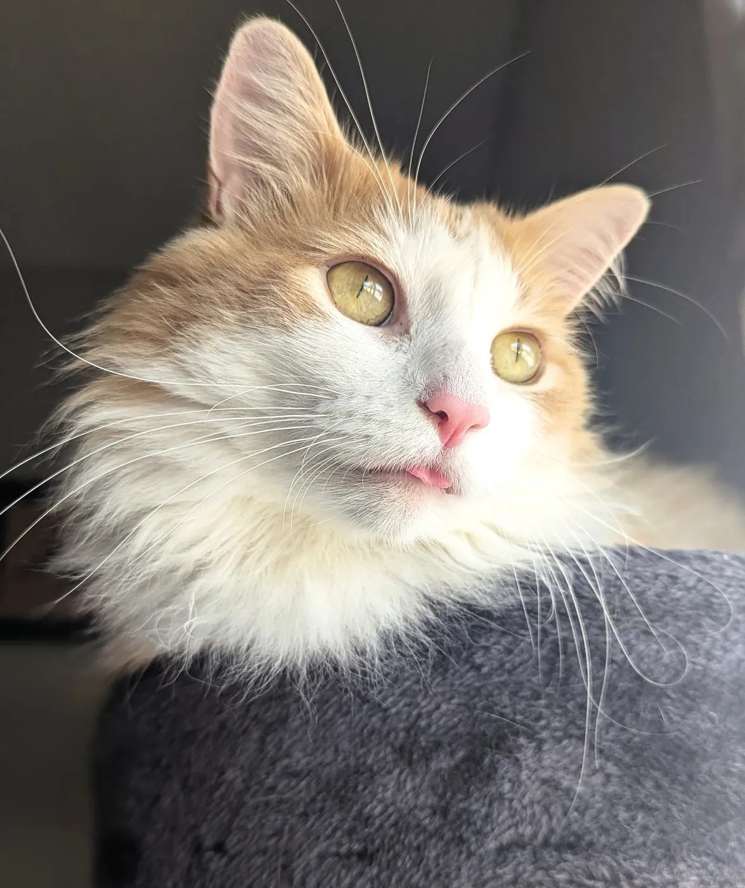
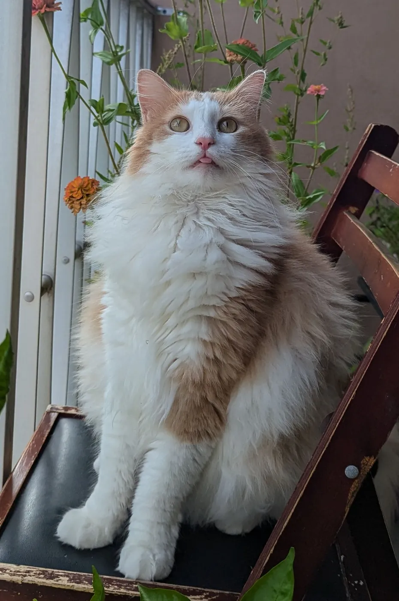
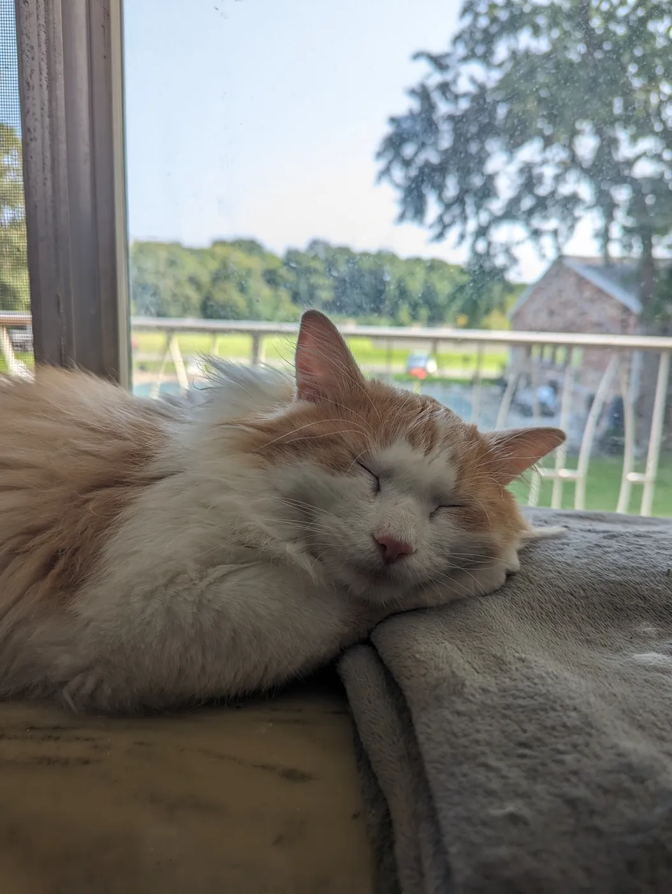

Position 4 / 5
Support. I'd rather set up the play than take the last hit: vision, timing, and keeping the team alive.
During my off time, I love spending time with my family, cooking, and playing games.

The quiet, fluffy member of the family.


Play as Babia: chase birds, grab snacks, dodge the vacuum.
He works hard supervising this portfolio. Tap for a virtual treat, or chip in for a real one on Ko-fi.
Mainly Dota 2, a popular multiplayer strategy game where two teams of five heroes fight to destroy each other's base. I play support: the role that places vision, stacks camps, and keeps everyone else alive. Honestly, it's not that different from analytics.


Support. I'd rather set up the play than take the last hit: vision, timing, and keeping the team alive.